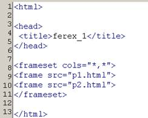
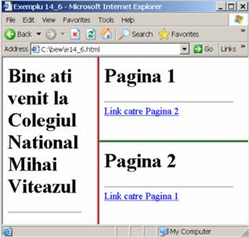

Cadre in HTML
Ferestrele sau (cadrele) ne permit sa definim in fereastra browserului
subferstre in care sa fie incarcate documente HTML diferite. Ferestrele sunt definite intr-un fisier HTML special ,
in care blocul este inlocuit de blocul . in interiorul acestui bloc,
fiecare cadru este introdus prin eticheta .
Un atribut obligatoriu al etichetei este src, care primeste ca valoare adresa URL a documentului HTML care va fi incarcat in acel frame. Definirea cadrelor se face
prin impartirea ferestrelor (si a subferestrelor) in linii si coloane:
impartirea unei ferestre intr-un numar de subferestre de tip coloana se face cu ajutorul atributului cols al etichetei ce descrie acea fereastra;
impartirea unei ferestre intr-un numar de subferestre de tip linie se face cu ajutorul atributului rows al etichetei ce descrie acea fereastra;
valoarea atributelor cols si rows este o lista de elemente separate prin virgula , care descriu modul in care se face impartirea.
Elementele listei pot fi:
un numar intreg de pixeli;
procente din dimensiunea ferestrei (numar intre 1 si 99 terminat cu %);
n* care inseamna n parti din spatiul ramas;
Exemplu 1: cols = 200, *, 50%, * inseamna o impartire in 4 subferestre , dintre care prima are 200 pixeli , a treia ocupa jumatate din spatiul total disponibil, iar a doua si a patra ocupa in mod egal
restul de spatiu ramas disponibil.
Exemplu 2: cols = 200, 1*, 50%, 2* inseamna o impartire in 4 subferestre, dintre care prima are 200 pixeli , a treia ocupa jumatate din spatiul total disponibil iar a doua si a patra ocupa in mod egal
restul de spatiu ramas disponibil, care se imparte in trei parti egale, a doua fereastra ocupand o parte, iar a patra ocupand 2 parti.
Observatii:
-daca mai multe elemente din lista sun configurate cu * , atunci spatiul disponibil ramas pentru ele se va imparti in mod egal.
- o subfereastra poate fi un cadru (folosind ) in care se va incarca un document HTML, sau poate fi impartita la randul ei la alte subfereste (folosind )

In exemplul urmator este creata o pagina Web cu trei cadre orizontale. Pentru al doilea cadru valoarea atributului src este adresa URL a unei imagini.
In exemplul urmator este creata o matrice de 4 cadre (2 X 2).
In exemplul urmator este creata o pagina Web cu trei cadre mixte. Pentru a o crea, se procedeaza din aproape in aproape. Mai intai, pagina este impartita in doua subferestre de tip coloana, dupa care a doua subfereastra
este impartita in doua subferestre de tip linie.
In exemplul urmator pagina Web este construita cu ajutorul a doua fisiere HTML ( pagina este identica cu cea anterioara)
Culori pentru chenarele cadrelor si dimensionarea chenarului unui cadru
Pentru a stabili culoarea chenarului unui cadru se utilizeaza atributul bordercolor. Acest atribut primeste ca valoare un nume de culoare sau o culoare definita in conformitate cu modelul de culoare RGB.
Atributul bordercolor poate fi atasat atat etichetei pentru a stabili culoarea tuturor chenarelor cadrelor incluse, cat si etichetei pentru a stabili culoarea chenarului pentru un cadru individual.

Atributul border al etichetei permite configurarea latimii chenarelor tuturor cadrelor la un numar dorit de pixeli.
Valoarea prestabilita a atributului border este de 5 pixeli.
O valoare de 0 pixeli va defini un cadru fara chenar.
In exemplul urmator se utilizeaza border = "0" pentru a obtine cadre fara chenar.
In mod prestabilit, chenarul unui cadru este afisat si are aspect tridimensional. Afisarea chenarului unui cadru se poate dezactiva daca se utilizeaza atributul frameborder cu valoare "no". Acest atribut poate fi atasat atat etichetei (dezactivarea fiind valabila
pentru toate cadrele incluse) cat si etichetei (dezactivarea fiind valabila numai pentru un singur cadru). Valorile posibile ale atributului frameborder sunt:
- "yes"- echivalent cu 1;
- "no" -echivalent cu 0;